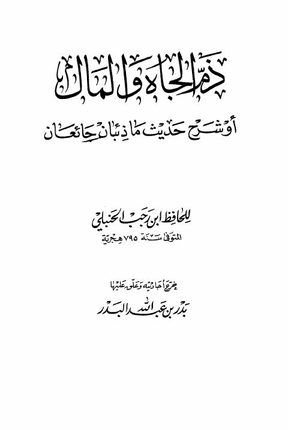

Downloads need an internet connection.
ذم المال والجاه أو شرح حديث ماذئبان جائعان
Authors: ابن رجب الحنبلي
Editors: بدر البدر
Publishers: دار ابن الجوزي
**▫️ العنوان: ذم المال والجاه أو شرح حديث ماذئبان جائعان** ▪️ المؤلف: #عبد_الرحمن_البغدادي_بن_رجب_الحنبلي ▫️ المحقق: #بدر_بن_عبد_الله_البدر ▪️ الناشر: #دار_ابن_الجوزي ▫️ تاريخ النشر: 1416هـ 1995م ▪️ بلد النشر: الدمام، #السعودية ▫️ الطبعة: 3 ▪️ عدد الأجزاء: 1 ▫️ الصفحات: 90 ▪️ نوع الوعاء: #كتاب ▫️ التصنيف الرئيسي: #الحديث_وعلومه ▪️ التصنيف الفرعي: #المسانيد_الأخرى_والجوامع ۪